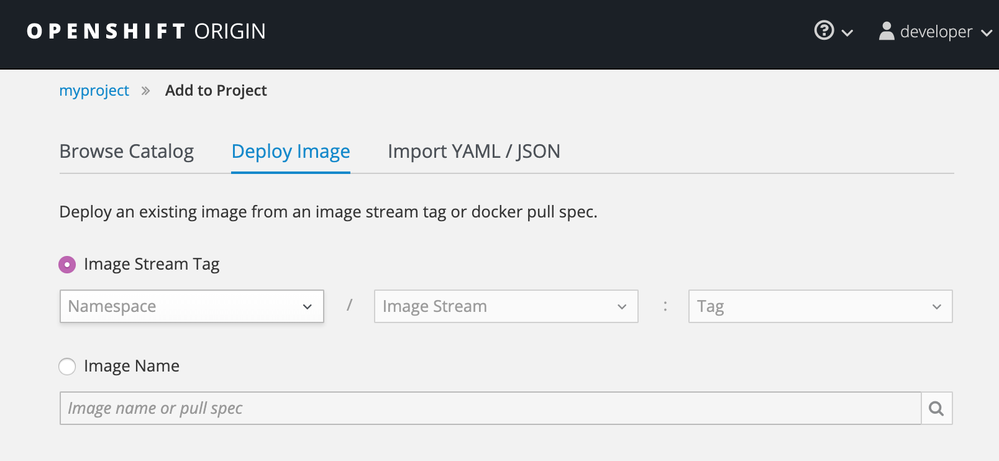
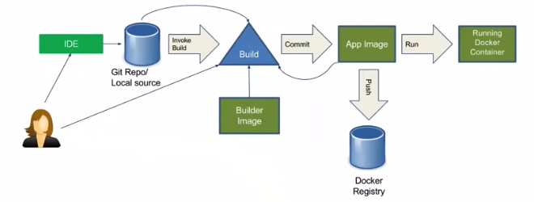
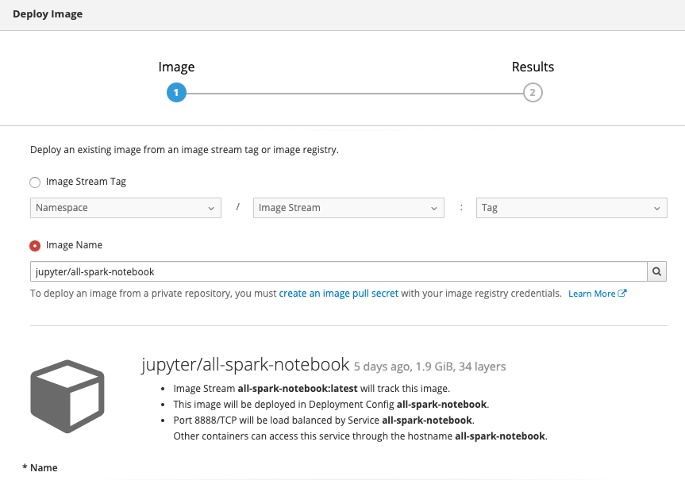
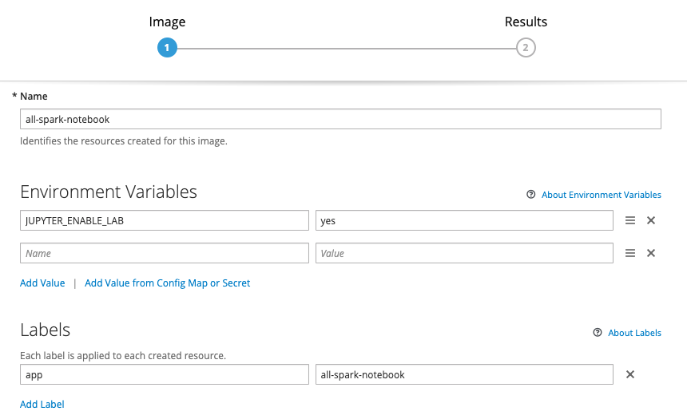

Deployments examples
Multiple ways to deploy an app to openshift:
-
Deploy an application from an existing Docker image. (Using
Deploy Imagein the project view.)
Note
There are two options:
- from an image imported in the openshift cluster, or built from a dockerfile inside the cluster.
- by accessing a remote image repository like
Dockerhubor quay.io. The image will be pulled down and stored within the internal OpenShift image registry. The image will then be copied to any node in the OpenShift cluster where an instance of the application will be scheduled.
Application will, by default, be visible internally to the OpenShift cluster, and usually only to other applications within the same project. Use
Create routeto make the app public. -
Build and deploy from source code contained in a Git repository using a Source-to-Image toolkit.

See this video to get s2i presentation and this section goes to a simple Flask app deployment using s2i.
-
Build and deploy from source code contained in a Git repository from a Dockerfile.
Build the first time
oc new-build --binary --name=vertx-greeting-application -l app=vertx-greeting-application
mvn dependency:copy-dependencies compile
oc start-build vertx-greeting-application --from-dir=. --follow
oc new-app vertx-greeting-application -l app=vertx-greeting-application
oc expose service vertx-greeting-application
To update the application, just update the code and run:
mvn dependency:copy-dependencies compile
oc start-build vertx-greeting-application --from-dir=. --follow
-
Using Helm charts and helm CLI: Helm can be used as well to define the config files and deploy. Here is a new CI/CD example done from scratch based on the Reefer ML project simulator code.
See getting started with helm guide.
- Create helm chart using the command
helm create
cd simulator/chart helm create kcontainer-reefer-simulator-
Change the values.yaml to reflect environment and app settings. Remove Ingress as we will define Openshift route for the app to be visible.
-
In the templates folder modify the deployment.yaml to add env variables section:
env: - name: PORT value: "{{ .Values.service.servicePort }}" - name: APPLICATION_NAME value: "{{ .Release.Name }}" - name: KAFKA_BROKERS valueFrom: configMapKeyRef: name: "{{ .Values.kafka.brokersConfigMap }}" key: brokers - name: TELEMETRY_TOPIC value: "{{ .Values.kafka.telemetryTopicName }}" - name: CONTAINER_TOPIC value: "{{ .Values.kafka.containerTopicName }}" {{- if .Values.eventstreams.enabled }} - name: KAFKA_APIKEY valueFrom: secretKeyRef: name: "{{ .Values.eventstreams.apikeyConfigMap }}" key: binding {{- end }}- Create helm template file for deployment:
helm template --output-dir templates --namespace eda-demo chart/kcontainer-reefer-simulator/- Push the service.yaml and deployment.yml template to the gitops repository under the branch
eda-demo/gse-eda-demos.us-east.containers.appdomain.cloud. - In the github repository define secrets environment variables for docker username and password, from your docker hub account.
- When pushing the repository the gitAction will perform the build.
- Create helm chart using the command
Deploy zipkin from docker image
Install it, and expose it with a service
oc new-app --docker-image=openzipkin/zipkin
oc expose svc/zipkin
oc get routes. Once the hostname is added to a DNS or /etc/hosts.
See zipkin architecture article here
Deploy DB2
The Community edition DB2 image on dockerhub. It includes a predefined DB.
Clone the DB2 repository to get the helm chart. See readme in this repo, for installation using helm but tiller needs to be installed before. The repository includes a script: db2u-install
Create your own docker image with a shell to create the schema:
FROM ibmcom/db2
RUN mkdir /var/custom
COPY createschema.sh /var/custom
RUN chmod a+x /var/custom/createschema.sh
Deinstalling configuration
oc delete -n jbsandbox sa/db2u role/db2u-role rolebinding/db2u-rolebinding
Deploy RabbitMQ
First install operator
To create a RabbitMQ instance, a RabbitmqCluster resource definition must be created and applied. RabbitMQ Cluster Kubernetes Operator creates the necessary resources, such as Services and StatefulSet, in the same namespace in which the RabbitmqCluster CRD was defined.
See some instructions here. Be sure to have kubectl >= 1.14
git clone http://github.com/rabbitmq/cluster-operator.git
cd cluster-operator
kubectl create -f config/namespace/base/namespace.yaml
kubectl create -f config/crd/bases/rabbitmq.com_rabbitmqclusters.yaml
# Add cluster roles and roles: rabbitmq-cluster-operator-role and rabbitmq-cluster-leader-election-role
kubectl -n rabbitmq-system create --kustomize config/rbac/
kubectl -n rabbitmq-system create --kustomize config/manager/
# Verify CRD installed
kubectl get customresourcedefinitions.apiextensions.k8s.io | grep rabbit
# Verify the service account
oc get sa rabbitmq-cluster-operator
# link the service account to security policy
oc adm policy add-scc-to-user privileged rabbitmq-cluster-operator
If there is an error about user 1000 not in range, change the deployment yaml file for the value securityContext.runAsUser: 1000570000 to a value in range and remove the other runAsGroup and fsGroup.
Create a cluster
when the operator pod runs, create one instance create a yaml file:
apiVersion: rabbitmq.com/v1beta1
kind: RabbitmqCluster
metadata:
name: eda-rabbitmq
spec:
replicas: 1
Then do
oc apply -f rabbit-cluster.yaml
oc get rabbitmqclusters
If an error like: "services \"eda-rabbitmq-rabbitmq-headless\" is forbidden: cannot set blockOwnerDeletion if an ownerReference refers to a resource you can't set finalizers on" happens, do the following:
Deploy sparks
Using the operator, see this note
Mongodb
Define an env file with the following variables: MONGODB_USER=mongo MONGODB_PASSWORD=mongo MONGODB_DATABASE=reeferdb MONGODB_ADMIN_PASSWORD=password
then run:
oc new-app --env-file=mongo.env --docker-image=openshift/mongodb-24-centos7
See the service:
oc describe svc mongodb-24-centos7
For more detail see this note
Deploy Jupyter lab
See this note to deploy Jupyter lab lastest image to Openshift using the Deploy Image choice. The deployment is done under the project reefer-shipment-solution

The environment variable needs to be set to get Jupyter lab.

It takes multiple minutes to deploy. For the permission error due to the jovyan user not known, the command was:
oc adm policy add-scc-to-user anyuid -z default -n reefer-shipment-solution
oc get routes
NAME HOST/PORT PATH SERVICES PORT TERMINATION WILDCARD
jupyterlab jupyterlab-reefer-shipment-solution.greencluster-fa9ee67c9ab6a7791435450358e564cc-0001.us-east.containers.appdomain.cloud all-spark-notebook 8888-tcp None
Get the secuity token to login in via the pod logs.
oc get pods
NAME READY STATUS RESTARTS AGE
all-spark-notebook-2-z4dqx
oc logs all-spark-notebook-2-z4dqx
To avoid loosing the work on the notebook, we need to add PVC to /home/jovyan/work mount point
oc get dc
oc set volume dc/all-spark-notebook --add --mount-path /home/jovyan/work --claim-size=1G
Deploy helm / tiller (DEPRECATED)
The goal is to install Tiller server on its own project, and grant it permissions to one or more other projects where Helm Charts will be installed.
See the instructions in this blog.
Here is a quick summary of the commands performed
oc new-project tiller
oc project tiller
export TILLER_NAMESPACE=tiller
oc process -f https://github.com/openshift/origin/raw/master/examples/helm/tiller-template.yaml -p TILLER_NAMESPACE="${TILLER_NAMESPACE}" -p HELM_VERSION=v2.16.4 | oc create -f -
Once deployed and Tiller server running, create a new project and grant tiller edit role to access this new project, and then use helm CLI to deploy the app:
oc new-project myapp
oc policy add-role-to-user edit "system:serviceaccount:${TILLER_NAMESPACE}:tiller"